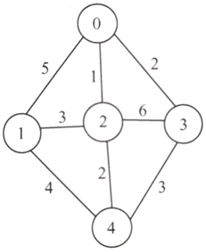
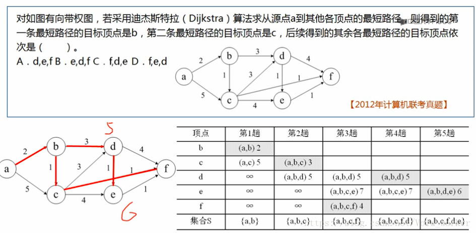
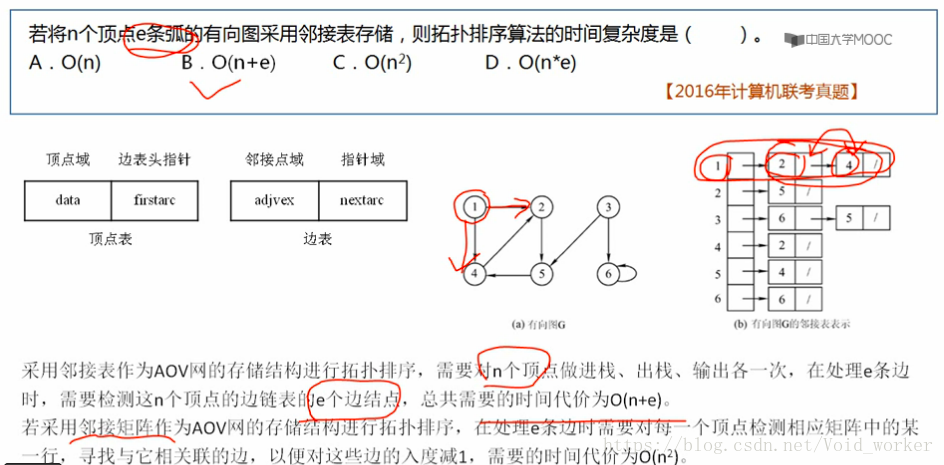

1.图的基本概念
图、无向图、有向图、完全图
度、入度、出度
路径：由顶点和相邻顶点序偶构成的边所形成的序列
连通图、连通分量（无向图）
强连通图、连通分量：极大强连通子图（有向图）
2.图的存储结构
包括邻接矩阵、邻接表、逆邻接表
邻接矩阵：不带权图（用0、1表示），带权图（用权重、无穷表示）；邻接矩阵第i行之和可求出顶点Vi的度
邻接表：包含顶点表和边表，邻接表不唯一（意味着边表顺序可以不一致）
逆邻接表
3.图的遍历 BFS、DFS
BFS（广度优先遍历）
DFS（深度优先遍历）：只有当访问完当前结点所连接的全部结点之后才能回溯到上一层
4.图的应用
4.1 最小生成树 Prim、Kruskal
生成树：一个连通图的生成树是一个极小的连通子图，它含有图中全部的顶点，但只有足以构成一棵树的n-1条边。
最小（代价）生成树：Minimum (cost) spanning tree。构造连通网的最小代价生成树称为最小生成树。（一棵生成树的代价就是树上各边的代价之和）
构造最小生成树的2种算法：Prim算法、Kruskal算法
Prim算法
思想：从图中任意取出一个顶点，把它当成一棵树，然后从与这棵树相接的边中选取一条最短（权值最小）的边，并将这条边及其所连顶点并入当前树中，此时得到了一棵有两个顶点的树。然后从与这棵树相接的边中选取一条最短的边，并将这条边及其所连顶点并入当前树中，得到一棵有3个顶点的树。以此类推，直到图中所有顶点都被并入树中为之，此时得到的生成树就是最小生成树。
假设全部顶点的集合是V，已经被挑选出来的是U，那么从集合V-U中不断挑选权值最低的点。（这里的权值最低，是相对于U中所有的点来说，是把U看成一个整体。Prim算法和后面的求最短路径的Dijkstra算法有些相似，具体区别看Prim算法和Dijkstra算法的比较）。
以某起点为顶点，逐步找各顶点上最小权值的边来构建最小生成树。（这就像是我们如果去参观某个展会，例如世博会，你从一个入口进去，然后找你所在位置周边的场馆中你最感兴趣的场馆观看，看完后再用同样的办法看下一个）
时间复杂度
举例：下图所示的带权无向图采用prim算法求解最小生成树的过程如下所示：
1）从顶点0开始，此时候选边为5、1、2，从中选择最小边长为1的边，加入到当前树中。
2）此时已有的边：(0,2)，此时已有顶点：0、2
此时候选边为5、3、2、6、2，最小边长为2，选择其加入（有2条，随便选1条符合条件即可）
3）此时已有的边：(0,2),(0,3)，此时已有顶点：0、2、3
此时候选边为5、3、2、3，最小边长为2，选择其加入
4）此时已有的边：(0,2),(0,3),(2,4)，此时已有顶点：0、2、3、4
此时侯选边为5、3、4，最小边长为3，选择其加入
5）此时已有的边：(0,2),(0,3),(2,4),(2,1)，此时已有顶点：0、1、2、3、4
已包含全部顶点，生成树求解过程完毕。

Kruskal算法
思想：选择最短边加入，并且确保不成环路。每次找出候选边中权值最小的边，就将该边并入树中（不能有环），重复此过程直到所有边都被检测完为止。
把所有的边排序，依次从小到大排列，按顺序选择边加入集合，如果选择该边构成了回路，则舍弃这条边。直到所有顶点都在同一集合中。
时间复杂度
两个算法对比：
Prim算法：针对顶点，对于稠密图(边数非常多的情况)更好；
Kruskal算法：针对边，对于稀疏图(边数少)时更好。
4.2 最短路径 Dijkstra、Floyd
基本概念：最短路径是指两顶点之间经过的边上权值之和最少的路径。
求最短路径的算法：Dijstra算法（从某个源点到其余各顶点的最短路径）、Floyd算法（每一对顶点之间的最短路径）
Dijstra算法
思想：从图中选取到源点v0路径长度最短的顶点并入到集合S中，修改顶点v0到剩下的顶点的最短路径长度值，直到所有顶点都并入到S中为止。
例题

Folyd算法
Floyd算法是一个经典的动态规划算法。用通俗的语言来描述的话，首先我们的目标是寻找从点i到点j的最短路径。从动态规划的角度看问题，从任意节点i到任意节点j的最短路径，不外乎2种可能，1是直接从i到j，2是从i经过若干个节点k到j。所以，我们假设Dis(i,j)为节点u到节点v的最短路径的距离，对于每一个节点k，我们检查Dis(i,k) + Dis(k,j) < Dis(i,j)是否成立，如果成立，证明从i到k再到j的路径比i直接到j的路径短，我们便设置Dis(i,j) = Dis(i,k) + Dis(k,j)，这样一来，当我们遍历完所有节点k，Dis(i,j)中记录的便是i到j的最短路径的距离。
4.3 AOV网 拓扑排序
AOV网：重点是顶点。顶点表示活动，边表示活动之间的先后关系。
拓扑排序：
基本概念：拓扑排序是对有向无环图G的排序，是将G中所有顶点排成一个线性序列，使得图中任意一对顶点u和v，若存在u到v的路径，则在拓扑排序序列中一定是u出现在v的前边。（与边无关）
实现思路：
从有向无环图中选择一个入度为0的顶点输出，然后删去此顶点，并删除以此顶点为尾的弧，继续重复此步骤，直到输出全部顶点或者AOV网中不存在入度为0的顶点为止。
时间复杂度：

具体实现：
拓扑排序的过程中，需要删除顶点，显然用邻接表会更加方便。
考虑到算法过程中时钟要查找入度为0的顶点，因此我们设置一个indegree数组，用来存放各顶点的入度数目。
判断拓扑序列是否存在：看是否为无环图
4.4 AOE网 关键路径
AOE网：重点是边。边表示活动，顶点表示事件（事件是新活动开始或旧活动结束的标志）
关键路径：在AOE（边表示活动）网中，从源点到汇点的所有路径中，具有最大路径长度的路径称为关键路径。把关键路径上的活动称为关键活动。关键路径既是最短，又是最长。最短：完成工期的最短事件。最长：图中的最长路径。
求关键路径的过程：
Step1.对事件（顶点）进行拓扑排序：（比较复杂繁琐的一步）
Step1.1求事件的最早发生时间（从前往后计算）（上一个事件+权值）的最大值（多对1，求最大值）
Step1.2求事件的最晚发生时间（从后往前计算）（下一个事件-权值）的最小值（1对多，求最小值）
Step2:写出活动（边）：（该步骤完全根据Step1中的写，不复杂）
Step2.1：求活动的最早发生时间（即上一个事件的最早开始时间）
Step2.2：求活动的最晚发生时间（即下一个事件的最晚开始时间-边的权值）
求最早：从前往后计算
求最晚：从后往前计算